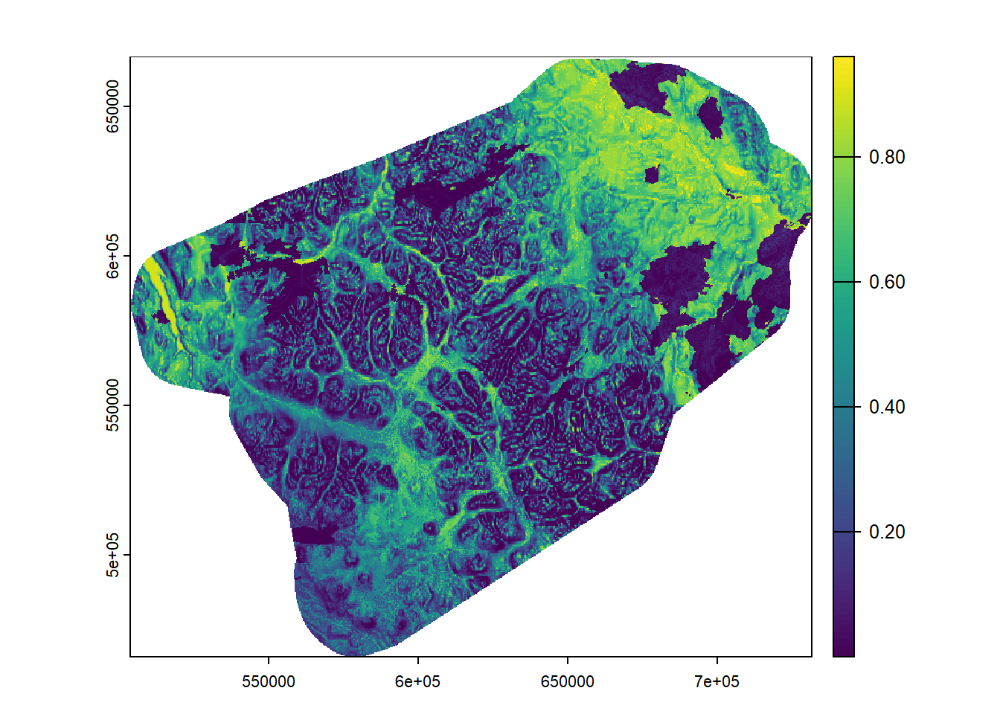
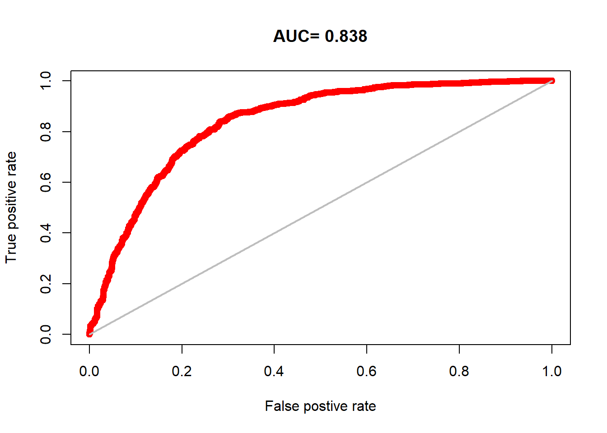
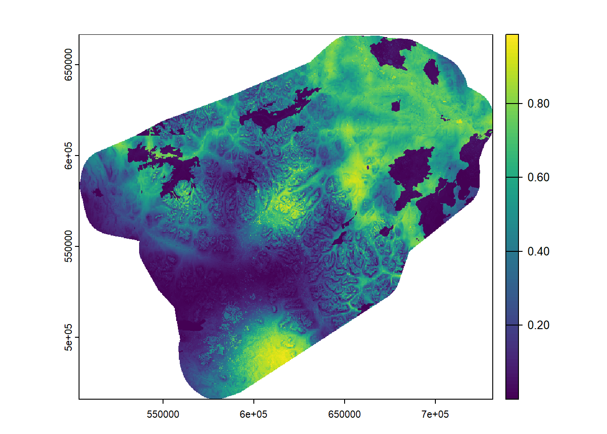
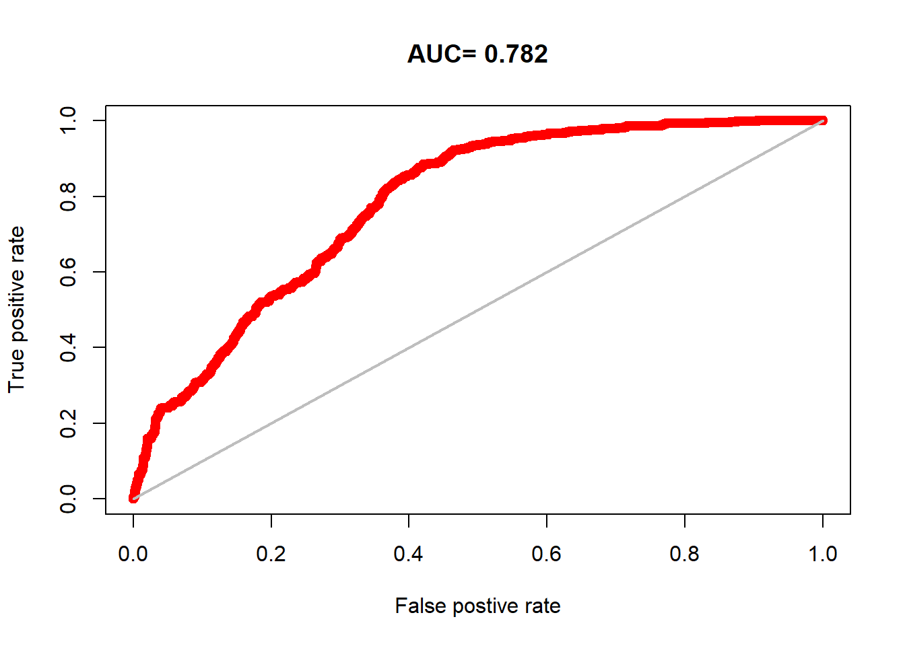
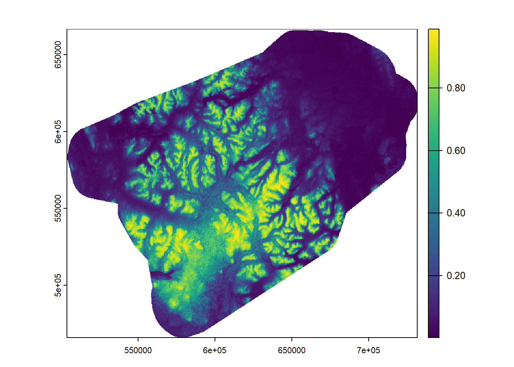

for (sea in seasons) {cat('Processing', sea, '...\n'); flush.console()# Prepare data gps <-st_read('../data/yt_caribou.gpkg', 'gps_vars', quiet=TRUE) |>st_drop_geometry() |>filter(season==sea) |>mutate(pa=occurrence, fpa=as.factor(occurrence)) |>mutate(occurrence=NULL) |>sample_n(nsize) |>as.data.frame() covars <-names(gps[,3:20])# Split data into training and test sets i <-sample(nrow(gps), 0.2*nrow(gps)) test <- gps[i,] train <- gps[-i,]# Estimate GLM model m1 <-glm(pa ~scale(elevation) +scale(aspect) +scale(roughness) +scale(eastness) +scale(northness) +scale(dist2line) +scale(dist2poly) + fires + forest + barren, family=binomial, data=train)print(summary(m1))print(report(m1))# Predict p1 <-predict(rasters, m1, type='response', na.rm=T)png(paste0('../output/glm/',sea,'_map.png'))plot(p1)dev.off()plot(p1)writeRaster(p1, paste0("../output/glm/",sea,"map.tif"), overwrite=TRUE)# Evaluate model eva <- predicts::pa_evaluate(predict(m1, test[test$pa==1, ]), predict(m1, test[test$pa==0, ]))png(paste0('../output/glm/',sea,'_auc.png'))plot(eva, "ROC")dev.off()plot(eva, "ROC")print(eva)}
Processing earlywinter ...
Call:
glm(formula = pa ~ scale(elevation) + scale(aspect) + scale(roughness) +
scale(eastness) + scale(northness) + scale(dist2line) + scale(dist2poly) +
fires + forest + barren, family = binomial, data = train)
Coefficients:
Estimate Std. Error z value Pr(>|z|)
(Intercept) 0.51160 0.07526 6.797 1.06e-11 ***
scale(elevation) -0.32169 0.05390 -5.969 2.39e-09 ***
scale(aspect) -0.04521 0.04418 -1.023 0.306078
scale(roughness) -1.41508 0.06246 -22.654 < 2e-16 ***
scale(eastness) -0.09437 0.04404 -2.143 0.032136 *
scale(northness) 0.19150 0.02748 6.969 3.20e-12 ***
scale(dist2line) 0.03967 0.06222 0.638 0.523780
scale(dist2poly) -0.46741 0.06913 -6.761 1.37e-11 ***
fires -4.38478 0.31404 -13.962 < 2e-16 ***
forest -0.89289 0.08730 -10.228 < 2e-16 ***
barren 0.41161 0.11629 3.540 0.000401 ***
---
Signif. codes: 0 '***' 0.001 '**' 0.01 '*' 0.05 '.' 0.1 ' ' 1
(Dispersion parameter for binomial family taken to be 1)
Null deviance: 11090.2 on 7999 degrees of freedom
Residual deviance: 8123.9 on 7989 degrees of freedom
AIC: 8145.9
Number of Fisher Scoring iterations: 6
We fitted a logistic model (estimated using ML) to predict pa with elevation,
aspect, roughness, eastness, northness, dist2line, dist2poly, fires, forest and
barren (formula: pa ~ scale(elevation) + scale(aspect) + scale(roughness) +
scale(eastness) + scale(northness) + scale(dist2line) + scale(dist2poly) +
fires + forest + barren). The model's explanatory power is substantial (Tjur's
R2 = 0.33). The model's intercept, corresponding to elevation = 0, aspect = 0,
roughness = 0, eastness = 0, northness = 0, dist2line = 0, dist2poly = 0, fires
= 0, forest = 0 and barren = 0, is at 0.51 (95% CI [0.36, 0.66], p < .001).
Within this model:
- The effect of elevation is statistically significant and negative (beta =
-0.32, 95% CI [-0.43, -0.22], p < .001; Std. beta = -0.32, 95% CI [-0.43,
-0.22])
- The effect of aspect is statistically non-significant and negative (beta =
-0.05, 95% CI [-0.13, 0.04], p = 0.306; Std. beta = -0.05, 95% CI [-0.13,
0.04])
- The effect of roughness is statistically significant and negative (beta =
-1.42, 95% CI [-1.54, -1.29], p < .001; Std. beta = -1.42, 95% CI [-1.54,
-1.29])
- The effect of eastness is statistically significant and negative (beta =
-0.09, 95% CI [-0.18, -8.09e-03], p = 0.032; Std. beta = -0.09, 95% CI [-0.18,
-8.09e-03])
- The effect of northness is statistically significant and positive (beta =
0.19, 95% CI [0.14, 0.25], p < .001; Std. beta = 0.19, 95% CI [0.14, 0.25])
- The effect of dist2line is statistically non-significant and positive (beta =
0.04, 95% CI [-0.08, 0.16], p = 0.524; Std. beta = 0.04, 95% CI [-0.08, 0.16])
- The effect of dist2poly is statistically significant and negative (beta =
-0.47, 95% CI [-0.60, -0.33], p < .001; Std. beta = -0.47, 95% CI [-0.60,
-0.33])
- The effect of fires is statistically significant and negative (beta = -4.38,
95% CI [-5.06, -3.82], p < .001; Std. beta = -0.94, 95% CI [-1.09, -0.82])
- The effect of forest is statistically significant and negative (beta = -0.89,
95% CI [-1.06, -0.72], p < .001; Std. beta = -0.41, 95% CI [-0.49, -0.33])
- The effect of barren is statistically significant and positive (beta = 0.41,
95% CI [0.18, 0.64], p < .001; Std. beta = 0.13, 95% CI [0.06, 0.20])
Standardized parameters were obtained by fitting the model on a standardized
version of the dataset. 95% Confidence Intervals (CIs) and p-values were
computed using a Wald z-distribution approximation.
|---------|---------|---------|---------|
=========================================

@stats
np na prevalence auc cor pcor ODP
1 1006 994 0.503 0.838 0.543 0 0.497
@thresholds
max_kappa max_spec_sens no_omission equal_prevalence equal_sens_spec
1 -0.053 -0.053 -5.05 0.503 0.327
@tr_stats
treshold kappa CCR TPR TNR FPR FNR PPP NPP MCR OR
1 -9.31 0 0.5 1 0 1 0 0.5 NaN 0.5 NaN
2 -9.1 0 0.5 1 0 1 0 0.5 1 0.5 Inf
3 -8.89 0 0.5 1 0 1 0 0.5 1 0.5 Inf
4 ... ... ... ... ... ... ... ... ... ... ...
1995 2.83 0 0.5 0 1 0 1 1 0.5 0.5 Inf
1996 2.83 0 0.5 0 1 0 1 1 0.5 0.5 Inf
1997 2.83 0 0.5 0 1 0 1 NaN 0.5 0.5 NaN
Processing latewinter ...
Call:
glm(formula = pa ~ scale(elevation) + scale(aspect) + scale(roughness) +
scale(eastness) + scale(northness) + scale(dist2line) + scale(dist2poly) +
fires + forest + barren, family = binomial, data = train)
Coefficients:
Estimate Std. Error z value Pr(>|z|)
(Intercept) -0.43598 0.07923 -5.503 3.74e-08 ***
scale(elevation) -0.46514 0.04783 -9.725 < 2e-16 ***
scale(aspect) -0.01027 0.04387 -0.234 0.8148
scale(roughness) -0.35649 0.03763 -9.473 < 2e-16 ***
scale(eastness) -0.04873 0.04416 -1.103 0.2698
scale(northness) 0.06058 0.02629 2.304 0.0212 *
scale(dist2line) -1.78534 0.06196 -28.813 < 2e-16 ***
scale(dist2poly) 1.19314 0.05772 20.670 < 2e-16 ***
fires -4.14433 0.34211 -12.114 < 2e-16 ***
forest 0.44037 0.08972 4.908 9.20e-07 ***
barren 1.45799 0.11351 12.845 < 2e-16 ***
---
Signif. codes: 0 '***' 0.001 '**' 0.01 '*' 0.05 '.' 0.1 ' ' 1
(Dispersion parameter for binomial family taken to be 1)
Null deviance: 11089.6 on 7999 degrees of freedom
Residual deviance: 8651.2 on 7989 degrees of freedom
AIC: 8673.2
Number of Fisher Scoring iterations: 6
We fitted a logistic model (estimated using ML) to predict pa with elevation,
aspect, roughness, eastness, northness, dist2line, dist2poly, fires, forest and
barren (formula: pa ~ scale(elevation) + scale(aspect) + scale(roughness) +
scale(eastness) + scale(northness) + scale(dist2line) + scale(dist2poly) +
fires + forest + barren). The model's explanatory power is substantial (Tjur's
R2 = 0.27). The model's intercept, corresponding to elevation = 0, aspect = 0,
roughness = 0, eastness = 0, northness = 0, dist2line = 0, dist2poly = 0, fires
= 0, forest = 0 and barren = 0, is at -0.44 (95% CI [-0.59, -0.28], p < .001).
Within this model:
- The effect of elevation is statistically significant and negative (beta =
-0.47, 95% CI [-0.56, -0.37], p < .001; Std. beta = -0.47, 95% CI [-0.56,
-0.37])
- The effect of aspect is statistically non-significant and negative (beta =
-0.01, 95% CI [-0.10, 0.08], p = 0.815; Std. beta = -0.01, 95% CI [-0.10,
0.08])
- The effect of roughness is statistically significant and negative (beta =
-0.36, 95% CI [-0.43, -0.28], p < .001; Std. beta = -0.36, 95% CI [-0.43,
-0.28])
- The effect of eastness is statistically non-significant and negative (beta =
-0.05, 95% CI [-0.14, 0.04], p = 0.270; Std. beta = -0.05, 95% CI [-0.14,
0.04])
- The effect of northness is statistically significant and positive (beta =
0.06, 95% CI [9.04e-03, 0.11], p = 0.021; Std. beta = 0.06, 95% CI [9.04e-03,
0.11])
- The effect of dist2line is statistically significant and negative (beta =
-1.79, 95% CI [-1.91, -1.67], p < .001; Std. beta = -1.79, 95% CI [-1.91,
-1.67])
- The effect of dist2poly is statistically significant and positive (beta =
1.19, 95% CI [1.08, 1.31], p < .001; Std. beta = 1.19, 95% CI [1.08, 1.31])
- The effect of fires is statistically significant and negative (beta = -4.14,
95% CI [-4.89, -3.53], p < .001; Std. beta = -0.90, 95% CI [-1.06, -0.77])
- The effect of forest is statistically significant and positive (beta = 0.44,
95% CI [0.26, 0.62], p < .001; Std. beta = 0.20, 95% CI [0.12, 0.27])
- The effect of barren is statistically significant and positive (beta = 1.46,
95% CI [1.24, 1.68], p < .001; Std. beta = 0.49, 95% CI [0.41, 0.56])
Standardized parameters were obtained by fitting the model on a standardized
version of the dataset. 95% Confidence Intervals (CIs) and p-values were
computed using a Wald z-distribution approximation.
|---------|---------|---------|---------|
=========================================


@stats
np na prevalence auc cor pcor ODP
1 1003 997 0.501 0.782 0.494 0 0.498
@thresholds
max_kappa max_spec_sens no_omission equal_prevalence equal_sens_spec
1 -0.381 -0.381 -3.731 0.5 0.19
@tr_stats
treshold kappa CCR TPR TNR FPR FNR PPP NPP MCR OR
1 -7.05 0 0.5 1 0 1 0 0.5 NaN 0.5 NaN
2 -6.96 0 0.5 1 0 1 0 0.5 1 0.5 Inf
3 -6.96 0 0.5 1 0 1 0 0.5 1 0.5 Inf
4 ... ... ... ... ... ... ... ... ... ... ...
1997 2.52 0 0.5 0 1 0 1 1 0.5 0.5 Inf
1998 2.52 0 0.5 0 1 0 1 NaN 0.5 0.5 NaN
1999 2.52 0 0.5 0 1 0 1 NaN 0.5 0.5 NaN
Processing summer ...
Call:
glm(formula = pa ~ scale(elevation) + scale(aspect) + scale(roughness) +
scale(eastness) + scale(northness) + scale(dist2line) + scale(dist2poly) +
fires + forest + barren, family = binomial, data = train)
Coefficients:
Estimate Std. Error z value Pr(>|z|)
(Intercept) 0.26820 0.05733 4.678 2.89e-06 ***
scale(elevation) 1.79035 0.06547 27.347 < 2e-16 ***
scale(aspect) -0.11879 0.04820 -2.464 0.013726 *
scale(roughness) -0.18739 0.03566 -5.255 1.48e-07 ***
scale(eastness) -0.18487 0.04804 -3.848 0.000119 ***
scale(northness) 0.08827 0.02925 3.018 0.002543 **
scale(dist2line) 0.75706 0.05720 13.236 < 2e-16 ***
scale(dist2poly) -0.47721 0.05976 -7.986 1.39e-15 ***
fires -1.22586 0.25341 -4.837 1.31e-06 ***
forest -0.77561 0.07601 -10.203 < 2e-16 ***
barren -0.48107 0.08422 -5.712 1.12e-08 ***
---
Signif. codes: 0 '***' 0.001 '**' 0.01 '*' 0.05 '.' 0.1 ' ' 1
(Dispersion parameter for binomial family taken to be 1)
Null deviance: 11088.0 on 7999 degrees of freedom
Residual deviance: 7331.5 on 7989 degrees of freedom
AIC: 7353.5
Number of Fisher Scoring iterations: 6
We fitted a logistic model (estimated using ML) to predict pa with elevation,
aspect, roughness, eastness, northness, dist2line, dist2poly, fires, forest and
barren (formula: pa ~ scale(elevation) + scale(aspect) + scale(roughness) +
scale(eastness) + scale(northness) + scale(dist2line) + scale(dist2poly) +
fires + forest + barren). The model's explanatory power is substantial (Tjur's
R2 = 0.40). The model's intercept, corresponding to elevation = 0, aspect = 0,
roughness = 0, eastness = 0, northness = 0, dist2line = 0, dist2poly = 0, fires
= 0, forest = 0 and barren = 0, is at 0.27 (95% CI [0.16, 0.38], p < .001).
Within this model:
- The effect of elevation is statistically significant and positive (beta =
1.79, 95% CI [1.66, 1.92], p < .001; Std. beta = 1.79, 95% CI [1.66, 1.92])
- The effect of aspect is statistically significant and negative (beta = -0.12,
95% CI [-0.21, -0.02], p = 0.014; Std. beta = -0.12, 95% CI [-0.21, -0.02])
- The effect of roughness is statistically significant and negative (beta =
-0.19, 95% CI [-0.26, -0.12], p < .001; Std. beta = -0.19, 95% CI [-0.26,
-0.12])
- The effect of eastness is statistically significant and negative (beta =
-0.18, 95% CI [-0.28, -0.09], p < .001; Std. beta = -0.18, 95% CI [-0.28,
-0.09])
- The effect of northness is statistically significant and positive (beta =
0.09, 95% CI [0.03, 0.15], p = 0.003; Std. beta = 0.09, 95% CI [0.03, 0.15])
- The effect of dist2line is statistically significant and positive (beta =
0.76, 95% CI [0.65, 0.87], p < .001; Std. beta = 0.76, 95% CI [0.65, 0.87])
- The effect of dist2poly is statistically significant and negative (beta =
-0.48, 95% CI [-0.59, -0.36], p < .001; Std. beta = -0.48, 95% CI [-0.59,
-0.36])
- The effect of fires is statistically significant and negative (beta = -1.23,
95% CI [-1.75, -0.75], p < .001; Std. beta = -0.28, 95% CI [-0.40, -0.17])
- The effect of forest is statistically significant and negative (beta = -0.78,
95% CI [-0.92, -0.63], p < .001; Std. beta = -0.38, 95% CI [-0.46, -0.31])
- The effect of barren is statistically significant and negative (beta = -0.48,
95% CI [-0.65, -0.32], p < .001; Std. beta = -0.23, 95% CI [-0.30, -0.15])
Standardized parameters were obtained by fitting the model on a standardized
version of the dataset. 95% Confidence Intervals (CIs) and p-values were
computed using a Wald z-distribution approximation.
|---------|---------|---------|---------|
=========================================


@stats
np na prevalence auc cor pcor ODP
1 998 1002 0.499 0.839 0.594 0 0.501
@thresholds
max_kappa max_spec_sens no_omission equal_prevalence equal_sens_spec
1 -0.525 -0.525 -4.48 0.499 0.201
@tr_stats
treshold kappa CCR TPR TNR FPR FNR PPP NPP MCR OR
1 -6.06 0 0.5 1 0 1 0 0.5 NaN 0.5 NaN
2 -5.84 0 0.5 1 0 1 0 0.5 1 0.5 Inf
3 -5.73 0 0.5 1 0 1 0 0.5 1 0.5 Inf
4 ... ... ... ... ... ... ... ... ... ... ...
1993 4.26 0 0.5 0 1 0 1 1 0.5 0.5 Inf
1994 4.26 0 0.5 0 1 0 1 1 0.5 0.5 Inf
1995 4.26 0 0.5 0 1 0 1 NaN 0.5 0.5 NaN
Processing fallrut ...
Call:
glm(formula = pa ~ scale(elevation) + scale(aspect) + scale(roughness) +
scale(eastness) + scale(northness) + scale(dist2line) + scale(dist2poly) +
fires + forest + barren, family = binomial, data = train)
Coefficients:
Estimate Std. Error z value Pr(>|z|)
(Intercept) 0.61345 0.05164 11.879 < 2e-16 ***
scale(elevation) 0.51088 0.04861 10.509 < 2e-16 ***
scale(aspect) 0.01151 0.04511 0.255 0.799
scale(roughness) -0.42966 0.03485 -12.330 < 2e-16 ***
scale(eastness) 0.03765 0.04488 0.839 0.402
scale(northness) 0.18847 0.02757 6.837 8.10e-12 ***
scale(dist2line) 0.66682 0.05748 11.601 < 2e-16 ***
scale(dist2poly) -0.43559 0.06102 -7.138 9.46e-13 ***
fires -3.85894 0.45670 -8.450 < 2e-16 ***
forest -1.51645 0.07605 -19.941 < 2e-16 ***
barren 0.36681 0.07721 4.751 2.02e-06 ***
---
Signif. codes: 0 '***' 0.001 '**' 0.01 '*' 0.05 '.' 0.1 ' ' 1
(Dispersion parameter for binomial family taken to be 1)
Null deviance: 11090 on 7999 degrees of freedom
Residual deviance: 8202 on 7989 degrees of freedom
AIC: 8224
Number of Fisher Scoring iterations: 7
We fitted a logistic model (estimated using ML) to predict pa with elevation,
aspect, roughness, eastness, northness, dist2line, dist2poly, fires, forest and
barren (formula: pa ~ scale(elevation) + scale(aspect) + scale(roughness) +
scale(eastness) + scale(northness) + scale(dist2line) + scale(dist2poly) +
fires + forest + barren). The model's explanatory power is substantial (Tjur's
R2 = 0.32). The model's intercept, corresponding to elevation = 0, aspect = 0,
roughness = 0, eastness = 0, northness = 0, dist2line = 0, dist2poly = 0, fires
= 0, forest = 0 and barren = 0, is at 0.61 (95% CI [0.51, 0.72], p < .001).
Within this model:
- The effect of elevation is statistically significant and positive (beta =
0.51, 95% CI [0.42, 0.61], p < .001; Std. beta = 0.51, 95% CI [0.42, 0.61])
- The effect of aspect is statistically non-significant and positive (beta =
0.01, 95% CI [-0.08, 0.10], p = 0.799; Std. beta = 0.01, 95% CI [-0.08, 0.10])
- The effect of roughness is statistically significant and negative (beta =
-0.43, 95% CI [-0.50, -0.36], p < .001; Std. beta = -0.43, 95% CI [-0.50,
-0.36])
- The effect of eastness is statistically non-significant and positive (beta =
0.04, 95% CI [-0.05, 0.13], p = 0.402; Std. beta = 0.04, 95% CI [-0.05, 0.13])
- The effect of northness is statistically significant and positive (beta =
0.19, 95% CI [0.13, 0.24], p < .001; Std. beta = 0.19, 95% CI [0.13, 0.24])
- The effect of dist2line is statistically significant and positive (beta =
0.67, 95% CI [0.55, 0.78], p < .001; Std. beta = 0.67, 95% CI [0.55, 0.78])
- The effect of dist2poly is statistically significant and negative (beta =
-0.44, 95% CI [-0.56, -0.32], p < .001; Std. beta = -0.44, 95% CI [-0.56,
-0.32])
- The effect of fires is statistically significant and negative (beta = -3.86,
95% CI [-4.90, -3.07], p < .001; Std. beta = -0.83, 95% CI [-1.05, -0.66])
- The effect of forest is statistically significant and negative (beta = -1.52,
95% CI [-1.67, -1.37], p < .001; Std. beta = -0.75, 95% CI [-0.82, -0.68])
- The effect of barren is statistically significant and positive (beta = 0.37,
95% CI [0.22, 0.52], p < .001; Std. beta = 0.17, 95% CI [0.10, 0.24])
Standardized parameters were obtained by fitting the model on a standardized
version of the dataset. 95% Confidence Intervals (CIs) and p-values were
computed using a Wald z-distribution approximation.
|---------|---------|---------|---------|
=========================================